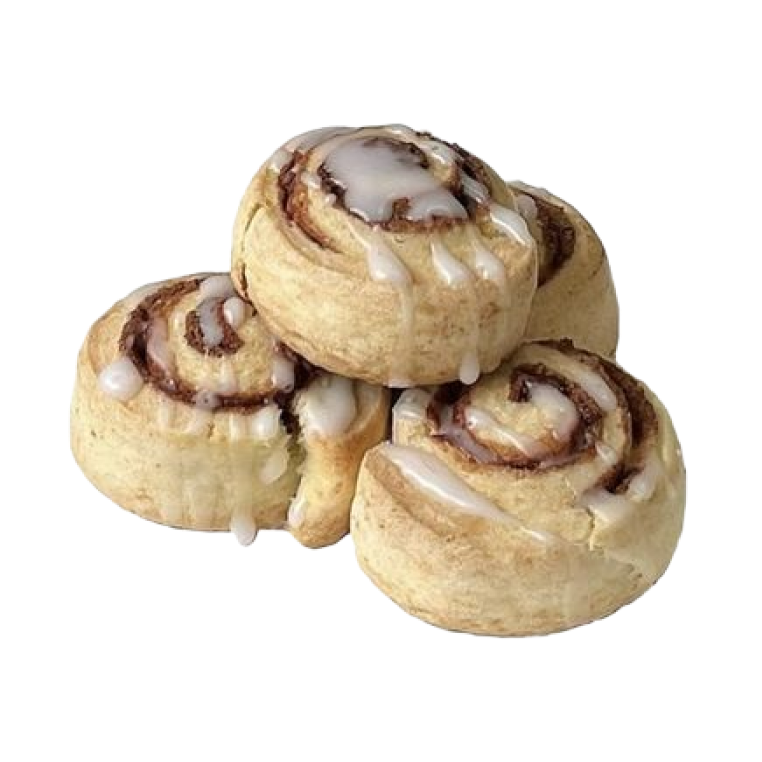
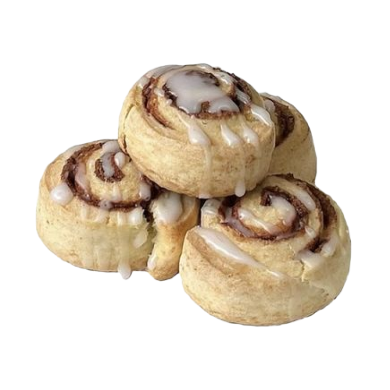

Узнайте о жизни советских и современных студентов в свободное время
 
 

Многое в отношении учебы и правил поведения студенты тогда воспринимали совсем по-другому. Так, студенты не допускали пропусков занятий и лекций, это было как само собой разумеющееся. В аудиториях всегда была тишина, а опоздать на занятия было большим стыдом. Сам процесс обучения отличался тем, что основным источником знаний был конспект. Была четко прописана литература, по которой нужно было готовиться к занятию. Молодые люди отличались большим уважением к преподавателям, а те могли делать им замечания о внешнем виде или морали студента.
Студенты всегда были заняты: спорт, декламация стихов, КВН, танцы, пение и многое другое. Свободное время молодые студенты тратили с пользой. Увлечение спортом было скорее правилом, чем исключением.

Студенты в СССР

Советский студент
Студенты в СССР

Советские студенты
Получение образования в советское время отличается от получения высшего образования в настоящем.
Студенты в СССР
Советский студент
Студенты в СССР
Советские студенты
Многое в отношении учебы и правил поведения студенты тогда воспринимали совсем по-другому. Так, студенты не допускали пропусков занятий и лекций, это было как само собой разумеющееся. В аудиториях всегда была тишина, а опоздать на занятия было большим стыдом. Сам процесс обучения отличался тем, что основным источником знаний был конспект. Была четко прописана литература, по которой нужно было готовиться к занятию. Молодые люди отличались большим уважением к преподавателям, а те могли делать им замечания о внешнем виде или морали студента.
Студенты всегда были заняты: спорт, декламация стихов, КВН, танцы, пение и многое другое. Свободное время молодые студенты тратили с пользой. Увлечение спортом было скорее правилом, чем исключением.
В новом поколении учащиеся в высших учебных заведениях имеют больше возможности выбрать себе отдельное жилье. В СССР молодежь жила в общежитии либо с родителями. Отдельное жилье считалось редкостью и роскошью. Отличается и питание.
В наше время студенты могут позвонить в пиццерию или заказать еду в интернете и через несколько минут они сытые и довольные. Студент советского и раннего постсоветского времени мог наесться у себя дома, приготовив еду или отобедать в столовой.
Cтудентка

Cтудентка
Cтудентка
Cтудентка

Cтудентка
Cтудентка
Cтудентка
Cтудентка
Советская и российская телепередача, придуманная для детей в 1983 году. Посвящена проблемам молодёжи. За время своего существования передача трансформировалась из тележурнала в ток-шоу. Здесь чуть ли не впервые на телевидении начали поднимать проблемы молодёжи на понятном ей языке.
Современным программам «До 16 и старше» явно проигрывает, телевидение продвинулось далеко вперёд. Но в ностальгических целях пересмотреть некоторые выпуски можно, например серию с участием Виктора Цоя. В 2001 году программа вышла в последний раз, а в августе закрылась.


Студенческое мероприятие
Раньше у молодежи не было современных гаджетов, все общались вживую. Поэтому многие из респондентов рассказывали нам о совместных поездках, о вечеринках, посиделках, о том, как много песен учили. Многие мероприятия советского времени носят идеологический характер: демонстрации, митинги, обязательные выборы, комсомольские собрания, ленинские зачеты.
Современный студент время, оставшееся после домашнего задания, обычно тратит на общение с друзьями, интернет, многие выбирают спорт, сон, различные клубы, бары, дискотеки, кино. И советский, и современный студент по своему целеустремленные и активные, при этом советский студент нацелен на благо и развитие страны, а студенты сейчас на саморазвитие и самореализацию.
01
IT-специалисты
02

Врачи
03

Маркетологи
04

Инженеры
05

Бьюти-специалисты
06

Архитекторы
В процессе изучения мы выяснили, что многое из студенческих мероприятий советского времени сохранилось: традиционные посвящение в студенты, КВН-ы, Студенческая весна, студенческие сборы и т.д. Сходство в том, что у студентов «тогдашних» и современных совершенно нет свободного времени, и приходится много времени тратить на учебу. Многие вспоминают и сейчас отвечают «Что совершенно нет времени, некогда даже спать».
Стало намного больше тех студентов, которые не учатся, но умудряются сдавать сессию, студентов, которые перестали получать стипендию. Изменилось отношение к взрослым, в частности к преподавателям: студенты стали более свободны. Зато стало меньше обязательных мероприятий для молодежи. У студентов появилось намного больше развлекательных мероприятий. В наше время для студентов открылось много возможностей в плане выбора отдельной жилплощади.

Студенты-выпускники